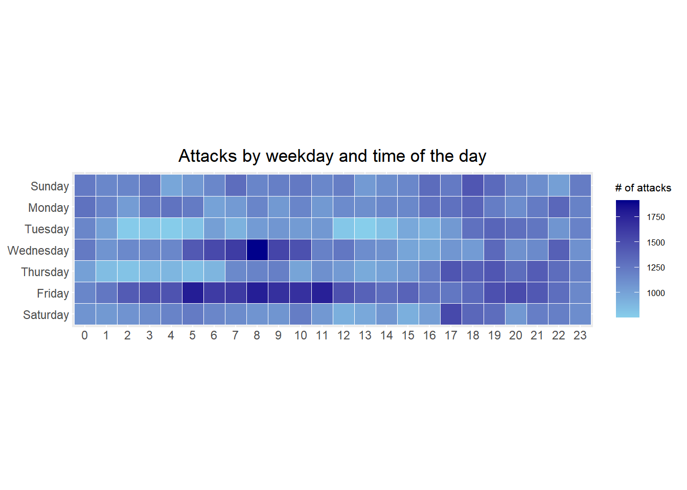
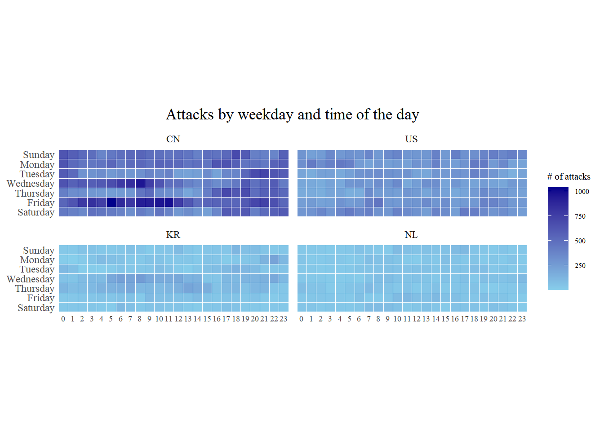
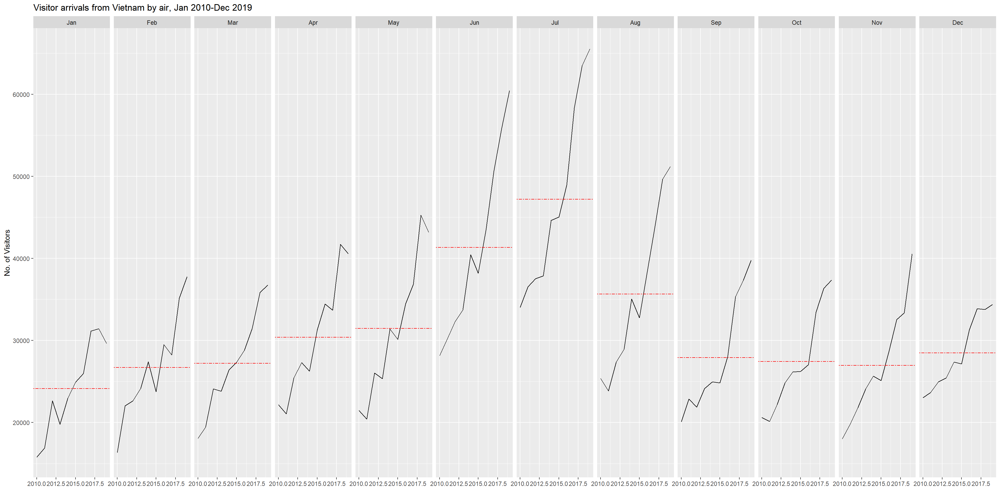
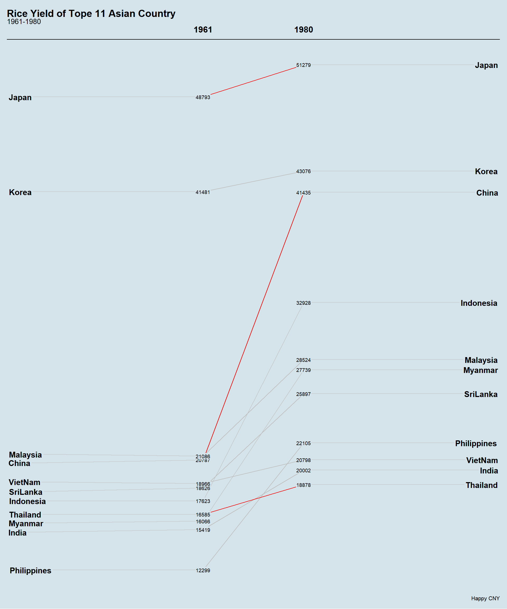
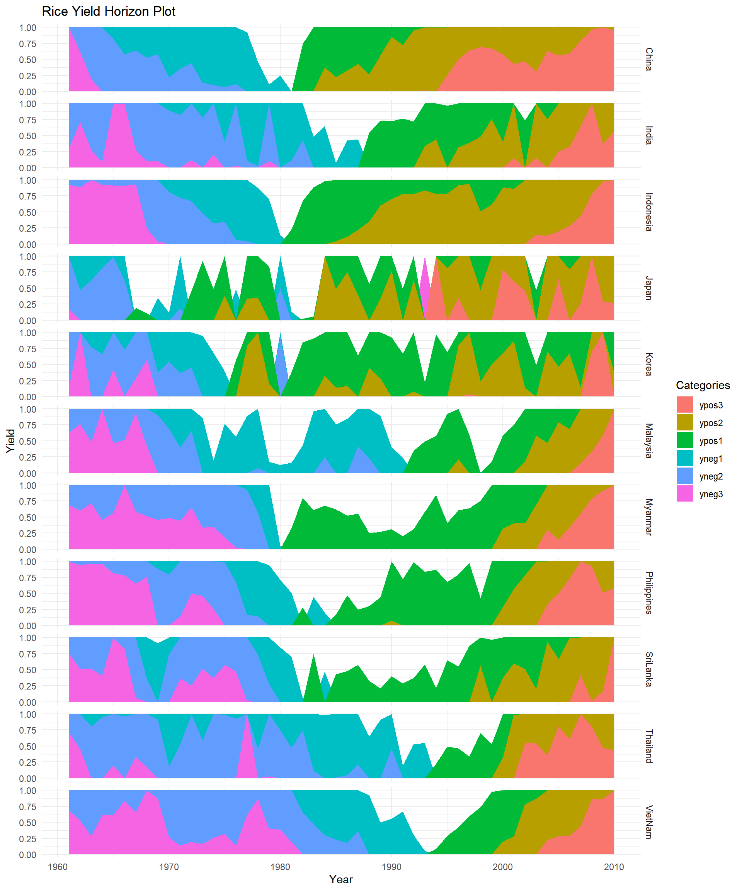

devtools::install_github("haleyjeppson/ggmosaic")07: Visualising and Analysing Time-oriented Data
1 Learning Outcome
By the end of this hands-on exercise, we will be able to create the following data visualisations using R packages:
- A calendar heatmap using ggplot2 functions
- A cycle plot using ggplot2 functions
- A slopegraph
- A horizon chart
Assumption:
All hypothesis tests in this exercise are conducted at the 5% significance level, where the null hypothesis states that no significant difference or no relationship exists between the variables of interest.
2 Getting Started
2.1 Installing and Loading the Required Libraries
There are 12 packages that will be used in this exercise.
| Package | Description |
|---|---|
| tidyverse | A collection of R packages for data importing, cleaning, transformation, and visualisation (e.g., readr, dplyr, tidyr, ggplot2). |
| viridis | Use this package’s colour scales to create clearer, more attractive plots. They improve data readability, are colourblind friendly, and print well in greyscale. It extends ggplot2 through scale_color_viridis() and scale_fill_viridis(). |
| knitr | Provides a general-purpose tool for dynamic report generation in R using Literate Programming techniques. |
| data.table | Process (such as join, add, delete) large data (e.g. 100gb in RAM) efficiently |
| lubridate | A Tidyverse package that handles date-time objects |
| scales | Provides graphical scales map data to aesthetics. |
| gridExtra | Provides useful tools for arranging multiple grid based plots (especially ggplot2) and tables on one page, e.g. grid.arrange() displaying combined plots together. |
| ggthemes | Provides ‘ggplot2’ themes and scales that replicate some of the famous looks. |
| readxl | Imports excel files into R. |
| CGPfunctions | Provides functions to conduct statistic tests in ggplot2 |
| ggHoriPlot | Extends horizon plots in ggplot2 |
The code below installs and loads the required packages into R environment.
devtools::install_github("ibecav/CGPfunctions")devtools::install_github("rivasiker/ggHoriPlot")pacman::p_load(tidyverse,readxl, knitr, scales, ggthemes, gridExtra, lubridate, data.table, viridis, CGPfunctions,ggHoriPlot)3 Plotting Calendar Heatmap
In this section, we will learn how to programmatically create a calendar heatmap using the ggplot2 package.
By the end of this section, we will be able to:
- Plot a calendar heatmap using ggplot2 functions and extensions
- Write your own functions using R
- Derive date and time fields using base R and lubridate
- Prepare data using tidyr and dplyr
3.1 the Data
For this hands-on exercise, the eventlog.csv file will be used. It contains 199,999 rows of time series records of cyber attacks by country.
3.2 Importing the Data
We use read_csv() from the readr package to import the dataset eventlog.csv into the R environment as a tibble named df. We then preview the dataset using kable().
attacks <- read_csv("data/eventlog.csv")The dataset contains three columns: two categorical variables, source_country and tz, and one timestamp column stored in dttm format.
kable(head(attacks), "html")| timestamp | source_country | tz |
|---|---|---|
| 2015-03-12 15:59:16 | CN | Asia/Shanghai |
| 2015-03-12 16:00:48 | FR | Europe/Paris |
| 2015-03-12 16:02:26 | CN | Asia/Shanghai |
| 2015-03-12 16:02:38 | US | America/Chicago |
| 2015-03-12 16:03:22 | CN | Asia/Shanghai |
| 2015-03-12 16:03:45 | CN | Asia/Shanghai |
- timestamp stores date and time values in POSIXct format
- source_country records the origin of the attack using ISO 3166 1 alpha 2 country codes
- tz records the time zone of the source IP address
3.3 Data Preparation
We build a function to derived two new fields wkday and hour before plotting the calender heatmap. the fucntion ymd_hms() is used to convert the timestamp based on timezone in the dataset then we create a table to store the source_courty from raw dataset, and extract weekdays and hours from converted timestamp and hours
TipNote
ymd_hms()converts dates stored as character or numeric vectors into POSIXct objects. Whileymd_hms()recognises most non alphanumeric date formats, if there are many missing values or invalid strings, the lower level parserparse_date_time()can be used instead.hour()extracts the hour component from the data-time object.weekdays()is base R function, that converts a POSIXt or Date object.The functions
weekdays()andmonths()return a character vector of names based on the current locale.quarters()returns a character vector from “Q1” to “Q4”.julian()returns the number of days (possibly fractional) since the origin.
The function ymd_hms() converts the timestamp using the time zone provided in the dataset. Then the table is rebuilt that keeps the source_country from the raw data and extracts the weekday and hour from the converted timestamp.
Finally, the predefined weekday order and the natural hour order (0 to 23) are applied to the table so the data is properly arranged for plotting.
TipNote
In addition to extracting the required information into the attacks data frame, mutate() from the dplyr package converts the wkday and hour variables into factors so they appear in the correct order when plotting.
kable(head(attacks))| tz | source_country | wkday | hour |
|---|---|---|---|
| Africa/Cairo | BG | Saturday | 20 |
| Africa/Cairo | TW | Sunday | 6 |
| Africa/Cairo | TW | Sunday | 8 |
| Africa/Cairo | CN | Sunday | 11 |
| Africa/Cairo | US | Sunday | 15 |
| Africa/Cairo | CA | Monday | 11 |
3.4 Building the Calendar Heatmap
| wkday | hour | n |
|---|---|---|
| Saturday | 0 | 1081 |
| Saturday | 1 | 1053 |
| Saturday | 2 | 1088 |
| Saturday | 3 | 1130 |
| Saturday | 4 | 1183 |
| Saturday | 5 | 1226 |
| Saturday | 6 | 1163 |
| Saturday | 7 | 1128 |
| Saturday | 8 | 1083 |
| Saturday | 9 | 1077 |
| Saturday | 10 | 1218 |
| Saturday | 11 | 1060 |
| Saturday | 12 | 927 |
| Saturday | 13 | 965 |
| Saturday | 14 | 1071 |
| Saturday | 15 | 927 |
| Saturday | 16 | 1023 |
| Saturday | 17 | 1532 |
| Saturday | 18 | 1349 |
| Saturday | 19 | 1310 |
| Saturday | 20 | 1060 |
| Saturday | 21 | 1209 |
| Saturday | 22 | 1207 |
| Saturday | 23 | 1122 |
ggplot(grouped,
aes(x = hour, y = wkday, fill = n)) + #maps colour intensity to the number of attacks
geom_tile(colour = "white", linewidth = 0.1) +
# draws rectangular tiles with white borderline
#theme_tufte(base_family = "Helvetica") +
coord_equal() + # forces each tile to be square
scale_fill_gradient(name = "# of attacks", #controls the colour scale.
low = "skyblue",
high = "darkblue") +
labs(x = NULL, y = NULL,
title = "Attacks by weekday and time of the day") +
theme(axis.ticks = element_blank(), #removes tick marks
plot.title = element_text(hjust = 0.5), #centres the title
legend.title = element_text(size = 8), #resize
legend.text = element_text(size = 6)) #resize
TipNote
A tibble called grouped is created by aggregating the attacks using the wkday and hour variables. A new variable n is produced using
count(), which records the number of attacks in each weekday and hour combination.na.omit()removes rows with missing values.geom_tile()draws the grid cells at each x and y position, where thecolourandsizearguments control the tile border colour and line width.theme_tufte()from the ggthemes package removes unnecessary visual clutter to produce a cleaner chart. We comment out this line to compare it with the default ggplot2 appearance. We see dashed outer border and the grey panel background with gridlines), is part of the default ggplot2 theme calledtheme_gray().theme_tufte()removes non-informative ink (chart junk) and keep only what helps interpretation.Choose the theme based on the plot purpose:
Scatterplots:
theme_minimal()or defaulttheme_gray()Publication figures:
theme_classic()Heatmaps, slopegraphs, and calendar plots:
theme_tufte()ortheme_void()coord_equal()ensures a 1:1 aspect ratio so the tiles appear square.scale_fill_gradient()creates a two colour gradient, mapping lower counts to lighter colours and higher counts to darker colours.
We can then group and count the data by hour and wkday and plot it directly. Since values exist for every combination, no additional preprocessing is required.
3.5 Plotting Multiple Calendar Heatmap
Challenge: Create multiple heatmaps showing attack patterns for the four countries with the highest number of attacks.
To identify the top four countries with the highest number of attacks, we:
- Count the total number of attacks for each country
- Calculate the percentage of attacks contributed by each country
- Store the results in a tibble data frame
attacks_by_country <- count(attacks, source_country) %>%
mutate(percent = percent(n/sum(n))) %>%
arrange(desc(n))kable(head(attacks_by_country))| source_country | n | percent |
|---|---|---|
| CN | 85243 | 42.62171% |
| US | 48684 | 24.34212% |
| KR | 12648 | 6.32403% |
| NL | 8572 | 4.28602% |
| VN | 6340 | 3.17002% |
| TW | 3469 | 1.73451% |
In this step, we extract the attack records for the top four countries from the attacks data frame and save them in a new tibble called top4_attacks.
top4 <- attacks_by_country$source_country[1:4]
top4[1] "CN" "US" "KR" "NL"kable(head(top4_attacks, 24))| source_country | wkday | hour | n |
|---|---|---|---|
| CN | Saturday | 0 | 438 |
| CN | Saturday | 1 | 401 |
| CN | Saturday | 2 | 358 |
| CN | Saturday | 3 | 487 |
| CN | Saturday | 4 | 457 |
| CN | Saturday | 5 | 429 |
| CN | Saturday | 6 | 393 |
| CN | Saturday | 7 | 330 |
| CN | Saturday | 8 | 421 |
| CN | Saturday | 9 | 361 |
| CN | Saturday | 10 | 467 |
| CN | Saturday | 11 | 393 |
| CN | Saturday | 12 | 283 |
| CN | Saturday | 13 | 336 |
| CN | Saturday | 14 | 284 |
| CN | Saturday | 15 | 240 |
| CN | Saturday | 16 | 368 |
| CN | Saturday | 17 | 605 |
| CN | Saturday | 18 | 560 |
| CN | Saturday | 19 | 610 |
| CN | Saturday | 20 | 407 |
| CN | Saturday | 21 | 516 |
| CN | Saturday | 22 | 572 |
| CN | Saturday | 23 | 599 |
The code below creates a 2 × 2 grid of heatmaps for the four countries with the highest number of attacks (CN, US, KR, and NL).
ggplot(top4_attacks,
aes(hour, wkday, fill = n)) +
geom_tile(color = "white", size = 0.1) +
theme_tufte() +
coord_equal() +
scale_fill_gradient(name = "# of attacks",
low = "skyblue",
high = "darkblue") +
facet_wrap(~source_country, ncol = 2) +
labs(x = NULL, y = NULL,
title = "Attacks by weekday and time of the day") +
theme(axis.ticks = element_blank(), #removes tick marks
axis.text.x = element_text(size = 7),
plot.title = element_text(hjust = 0.5), #centres the title
legend.title = element_text(size = 8), #resize
legend.text = element_text(size = 6)) #resize
4 Plotting Cycle Plot
In this section, we use functions from ggplot2 to programmatically create a cycle plot showing the time series patterns and trends of visitor arrivals from Vietnam.
arrivals_by_air.xlsx will be used in this section.
The code below imports the file using read_excel() from the readxl package and saves it as a tibble data frame named air.
air <- read_excel("data/arrivals_by_air.xlsx")The dataset contains 240 rows and 36 columns. The Month Year column stores date values in dttm format, and the remaining columns record arrival counts from 35 countries in numeric (dbl) format.
glimpse(air)Rows: 240
Columns: 36
$ `Month-Year` <dttm> 2000-01-01, 2000-02-01, 2000-03-01, 2000-0…
$ `Republic of South Africa` <dbl> 3291, 2357, 4036, 4241, 2841, 2776, 3728, 2…
$ Canada <dbl> 5545, 6120, 6255, 4521, 3914, 3487, 4238, 4…
$ USA <dbl> 25906, 28262, 30439, 25378, 26163, 28179, 2…
$ Bangladesh <dbl> 2883, 2469, 2904, 2843, 2793, 3146, 3489, 3…
$ Brunei <dbl> 3749, 3236, 3342, 5117, 4152, 5018, 5026, 6…
$ China <dbl> 33895, 34344, 27053, 30464, 30775, 26720, 3…
$ `Hong Kong SAR (China)` <dbl> 13692, 19870, 17086, 22346, 16357, 18133, 2…
$ India <dbl> 19235, 18975, 21049, 26160, 35869, 31314, 2…
$ Indonesia <dbl> 65151, 37105, 44205, 45480, 38350, 47982, 5…
$ Japan <dbl> 59288, 58188, 74426, 49985, 48937, 53798, 6…
$ `South Korea` <dbl> 21457, 19634, 20719, 17489, 19398, 17522, 2…
$ Kuwait <dbl> 507, 199, 386, 221, 164, 440, 1943, 2694, 4…
$ Malaysia <dbl> 27472, 29084, 30504, 34478, 34795, 34660, 2…
$ Myanmar <dbl> 1177, 1161, 1355, 1593, 1397, 1715, 1354, 1…
$ Pakistan <dbl> 2150, 2496, 2429, 2711, 2594, 2924, 4001, 3…
$ Philippines <dbl> 8404, 9128, 11691, 14141, 13305, 10555, 968…
$ `Saudi Arabia` <dbl> 1312, 623, 1578, 705, 679, 2749, 5748, 4012…
$ `Sri Lanka` <dbl> 3922, 3988, 4259, 6579, 4625, 4740, 4764, 5…
$ Taiwan <dbl> 15766, 24861, 18767, 22735, 18399, 21042, 2…
$ Thailand <dbl> 12048, 12745, 16971, 20397, 15769, 17217, 1…
$ `United Arab Emirates` <dbl> 1318, 899, 1474, 1284, 1042, 1545, 3641, 33…
$ Vietnam <dbl> 1527, 2269, 2034, 2420, 1833, 2480, 2221, 2…
$ `Belgium & Luxembourg` <dbl> 1434, 1596, 1548, 1592, 1167, 1170, 1912, 1…
$ CIS <dbl> 2703, 1182, 1088, 1012, 660, 712, 911, 864,…
$ Finland <dbl> 1634, 1297, 1220, 1208, 743, 982, 680, 1029…
$ France <dbl> 4752, 6391, 5528, 5544, 4225, 4047, 5769, 6…
$ Germany <dbl> 12739, 13093, 13645, 13366, 10878, 9054, 10…
$ Ireland <dbl> 1292, 1200, 1368, 1345, 1067, 1363, 1348, 1…
$ Italy <dbl> 3544, 2897, 2717, 2512, 2205, 2196, 2988, 6…
$ Netherlands <dbl> 4962, 5054, 4950, 4149, 3643, 3544, 5969, 5…
$ Spain <dbl> 925, 747, 935, 941, 764, 855, 1163, 1669, 1…
$ Switzerland <dbl> 3731, 3980, 3576, 3850, 3025, 2580, 3656, 2…
$ `United Kingdom` <dbl> 28986, 35148, 36117, 33792, 23377, 21769, 2…
$ Australia <dbl> 34616, 26030, 31119, 34824, 33139, 35731, 4…
$ `New Zealand` <dbl> 5034, 3938, 4668, 6890, 7006, 7634, 9502, 6…kable(head(air))| Month-Year | Republic of South Africa | Canada | USA | Bangladesh | Brunei | China | Hong Kong SAR (China) | India | Indonesia | Japan | South Korea | Kuwait | Malaysia | Myanmar | Pakistan | Philippines | Saudi Arabia | Sri Lanka | Taiwan | Thailand | United Arab Emirates | Vietnam | Belgium & Luxembourg | CIS | Finland | France | Germany | Ireland | Italy | Netherlands | Spain | Switzerland | United Kingdom | Australia | New Zealand |
|---|---|---|---|---|---|---|---|---|---|---|---|---|---|---|---|---|---|---|---|---|---|---|---|---|---|---|---|---|---|---|---|---|---|---|---|
| 2000-01-01 | 3291 | 5545 | 25906 | 2883 | 3749 | 33895 | 13692 | 19235 | 65151 | 59288 | 21457 | 507 | 27472 | 1177 | 2150 | 8404 | 1312 | 3922 | 15766 | 12048 | 1318 | 1527 | 1434 | 2703 | 1634 | 4752 | 12739 | 1292 | 3544 | 4962 | 925 | 3731 | 28986 | 34616 | 5034 |
| 2000-02-01 | 2357 | 6120 | 28262 | 2469 | 3236 | 34344 | 19870 | 18975 | 37105 | 58188 | 19634 | 199 | 29084 | 1161 | 2496 | 9128 | 623 | 3988 | 24861 | 12745 | 899 | 2269 | 1596 | 1182 | 1297 | 6391 | 13093 | 1200 | 2897 | 5054 | 747 | 3980 | 35148 | 26030 | 3938 |
| 2000-03-01 | 4036 | 6255 | 30439 | 2904 | 3342 | 27053 | 17086 | 21049 | 44205 | 74426 | 20719 | 386 | 30504 | 1355 | 2429 | 11691 | 1578 | 4259 | 18767 | 16971 | 1474 | 2034 | 1548 | 1088 | 1220 | 5528 | 13645 | 1368 | 2717 | 4950 | 935 | 3576 | 36117 | 31119 | 4668 |
| 2000-04-01 | 4241 | 4521 | 25378 | 2843 | 5117 | 30464 | 22346 | 26160 | 45480 | 49985 | 17489 | 221 | 34478 | 1593 | 2711 | 14141 | 705 | 6579 | 22735 | 20397 | 1284 | 2420 | 1592 | 1012 | 1208 | 5544 | 13366 | 1345 | 2512 | 4149 | 941 | 3850 | 33792 | 34824 | 6890 |
| 2000-05-01 | 2841 | 3914 | 26163 | 2793 | 4152 | 30775 | 16357 | 35869 | 38350 | 48937 | 19398 | 164 | 34795 | 1397 | 2594 | 13305 | 679 | 4625 | 18399 | 15769 | 1042 | 1833 | 1167 | 660 | 743 | 4225 | 10878 | 1067 | 2205 | 3643 | 764 | 3025 | 23377 | 33139 | 7006 |
| 2000-06-01 | 2776 | 3487 | 28179 | 3146 | 5018 | 26720 | 18133 | 31314 | 47982 | 53798 | 17522 | 440 | 34660 | 1715 | 2924 | 10555 | 2749 | 4740 | 21042 | 17217 | 1545 | 2480 | 1170 | 712 | 982 | 4047 | 9054 | 1363 | 2196 | 3544 | 855 | 2580 | 21769 | 35731 | 7634 |
air$month <- factor(month(air$`Month-Year`),
levels = 1:12,
labels = month.abb, #built in constants
ordered = TRUE)
air$year <- year(ymd(air$`Month-Year`))| month | year |
|---|---|
| Jan | 2000 |
| Feb | 2000 |
| Mar | 2000 |
| Apr | 2000 |
| May | 2000 |
| Jun | 2000 |
We select the data for target country (e.g. Vietnam) and visits after 2010.
Vietnam <- air %>%
select(`Vietnam`,
month,
year) %>%
filter(year >= 2010)kable(head(Vietnam))| Vietnam | month | year |
|---|---|---|
| 15781 | Jan | 2010 |
| 16335 | Feb | 2010 |
| 18061 | Mar | 2010 |
| 22154 | Apr | 2010 |
| 21461 | May | 2010 |
| 28146 | Jun | 2010 |
We use group_by() and summarise() of dplyr package to calculate the average number of arrivals for each month across all years.
This matches what a cycle plot needs, which is the typical seasonal pattern by month.
hline.data <- Vietnam %>%
group_by(month) %>%
summarise(avgvalue = mean(`Vietnam`))
hline.data# A tibble: 12 × 2
month avgvalue
<ord> <dbl>
1 Jan 24113.
2 Feb 26693.
3 Mar 27200.
4 Apr 30391.
5 May 31453.
6 Jun 41325.
7 Jul 47193.
8 Aug 35640.
9 Sep 27919.
10 Oct 27433
11 Nov 26949.
12 Dec 28481.The code below creates the cycle plot.
ggplot() +
geom_line(data=Vietnam,
aes(x=year,
y=`Vietnam`,
group=month),
colour="black") +
geom_hline(aes(yintercept=avgvalue),
data=hline.data,
linetype=6,
colour="red",
size=0.5) +
facet_grid(~month) +
labs(axis.text.x = element_blank(),
title = "Visitor arrivals from Vietnam by air, Jan 2010-Dec 2019") +
xlab("") +
ylab("No. of Visitors") +
theme_gray()
TipNote
The table hline.data stores the average number of visitor arrivals for each month. The horizontal line is drawn at
avgvalue, which represents the monthly average arrival level.facet_grid(~ month)creates 12 panels in one row, whilefacet_wrap(~ month)automatically arranges the panels into a rectangular grid.
5 Plotting Slopegraph
In this section, we learn how to create a slopegraph using R.
A slopegraph is a efficient chart that shows ranking, actual values, change direction over time all in one visual.
Before starting, make sure CGPfunctions is installed and loaded in the R environment. Then review the guide on using newggslopegraph(), and read the documentation to understand its arguments and usage.
TipKey Arguments
Main arguments of
newggslopegraph()dataframe: dataset used for plottingTimes:x axis variable (usually time such as year)Measurement: numeric values to compare (y axis)Grouping: category that forms each slope line (e.g. country, gender)Common optional arguments
Data.label: labels shown next to points (default: measurement values)Title,SubTitle,Caption: add text annotations to the chartLineColor: set line colours (single colour or by group)LineThickness: adjust thickness of slope linesAppearance and behaviour options
ReverseYAxis: reverse the y axis (useful for rankings)ThemeChoice:visual theme (options: “bw”, “tufte”, “wsj”, “econ”, etc.)RemoveMissing: remove groups with missing values (default: TRUE)
5.1 Step 1: Data Import
Import the rice data set into R environment by using the code chunk below.
rice <- read_csv("data/rice.csv")The dataset contains 440 rows and 4 columns: country (character), and year, yield, and production (numeric/dbl).
kable(head(rice))| Country | Year | Yield | Production |
|---|---|---|---|
| China | 1961 | 20787 | 56217601 |
| China | 1962 | 23700 | 65675288 |
| China | 1963 | 26833 | 76439280 |
| China | 1964 | 28289 | 85853780 |
| China | 1965 | 29667 | 90705630 |
| China | 1966 | 31445 | 98403990 |
5.2 Step 2: Plotting the slopegraph
[1] "China" "India" "Indonesia" "Japan" "Korea"
[6] "Malaysia" "Myanmar" "Philippines" "SriLanka" "Thailand"
[11] "VietNam" Next the code below creates a basic slopegraph with highighted countries (China, Japan and Thailand).
rice %>%
mutate(Year = factor(Year)) %>%
filter(Year %in% c(1961, 1980)) %>%
newggslopegraph(Year, Yield, Country,
Title = "Rice Yield of Tope 11 Asian Country",
SubTitle = "1961-1980",
Caption = "Happy CNY",
ThemeChoice = "econ",
LineThickness = .5,
YTextSize = 4,
LineColor = c("red", rep("gray", 2), "red", rep("gray", 5), "red", "gray")
)
TipNote
For effective visualisation, factor() is used to convert the Year variable from numeric to a factor so it is treated as a categorical variable in the plot.
6 Creating Horizon Plots
Horizon plots compare each country to its own history/pattern while line plots with same scales compare countries to each other.
rice %>%
ggplot(aes(x = Year, y = Yield)) +
geom_horizon() +
facet_grid(Country ~ .) +
theme_minimal() +
labs(title = "Rice Yield Horizon Plot")
7 Reference
Kam, Tin Seong (2026). 17 Visualising and Analysing Time-oriented Data, R for Visual Analytics, https://r4va.netlify.app/chap17